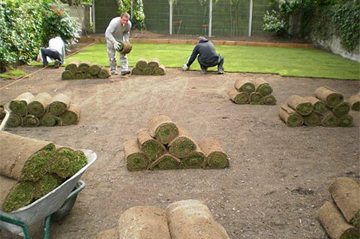
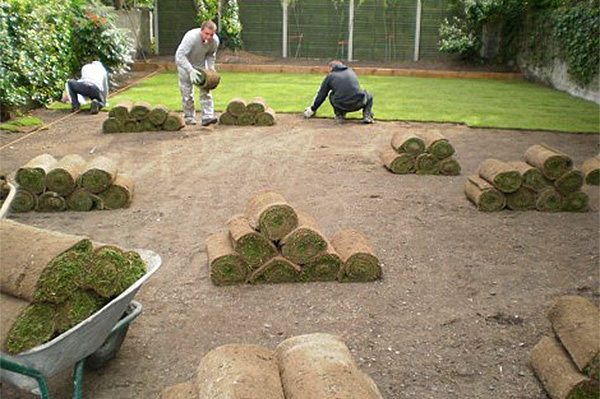

Ликвидируем последствия зимы
Последние годы погода бросает нас из крайности в крайность – зима на зиму не приходится. В частности от характера зимы зависит глубина промерзания грунта на участке. От этого зависит и повреждения корневой системы растений. Кроме того, вода выщелачивает и вымывает из грунта соли, которые скрепляли и держали минеральные частички в виде единого массива. Добротный грунт начинает приобретать свойства текучести. Первыми с потоками воды уходят мельчайшие из твердых фракций, которые прежде размещались между более крупными и создавали целостность конструкционного тела грунта. Грунт постепенно разрыхляется, теряет несущую способность и оседает.
Количество влаги в грунте зависит в прочем не только от количества выпавшего снега, но и от характера грунтов в той местности, где расположен участок, а также от ландшафта. Если территория имеет некоторый наклон пусть даже незначительный, то это существенно упростит дренажные работы.
Если зима была малоснежной, то следует принять меры к снегозадержанию, если же снега оказалось в избытке, то предпринимаемые меры должны быть направлены на уменьшение количества талой воды. И те и другие мероприятия, в конечном счете, направлены на то, чтобы количество влаги на участке оказалось оптимальным. Избыточное количество, равно как и недостаточное могут оказаться для садовой растительности совершенно не полезными.
В качестве мер по снегозадержанию традиционно используют создание земляных валов небольшой высоты 20-30 см. на участках где нет зимующих в грунте растений или вспашку по периметру участка в тех случаях, когда это возможно. Однако если зима оказалась совсем малоснежной, то польза от таких мероприятий сводится к нулю. Но и избыток снега тоже создает немало проблем, переувлажняя почву.
После того как последствия зимы были устранены можно начать «будить» участок.
Подготовка и удобрение садового участка
Первое, что необходимо сделать в саду, – убрать листья. Причем, не стоит торопиться и выполнять эту работу сразу после того, как растаял снег. Подождите некоторое время – пусть листва немного подсохнет, тогда и справиться с ней будет намного проще.
Обрезка деревьев, наряду с удобрением и орошением, также является важнейшим элементом ухода. Лучшим временем для обрезки является период покоя, когда растение не цветет и не плодоносит. Обрезку проводят, когда устойчивая температура не опускается ниже 2 градусов, иначе срезы получатся неровными, а кора начнет ломаться. Каждое дерево подрезают особенным образом, в зависимости от его вида, сорта и возраста. Например, молодые яблони и груши с раскидистой кроной подрезают в месте изгиба ветвей, как бы направляя их вверх. А сжатую крону, наоборот, стремятся расширить, подрезая в самой глубине.
Помните, что чрезмерное увлечение подрезкой может вызвать излишнее загустение кроны дерева. Если боитесь испортить дерево, которое растили много лет, лучше обратиться к специалисту. Ландшафтный дизайнер поможет привести в порядок после зимы ваш загородный участок.
При должном уходе негативные последствия зимовки можно уменьшить и предотвратить их появление в дальнейшем. Ранней весной, до начала проклевывания почек, можно пересаживать кустарники. И не забудьте удалить с них все старые листья!
Что высаживаем в марте
По окончанию зимы важно не упустить удобное время для обновления коллекции садовых растений. Однако с травами и однолетними растениями торопиться не следует. Однолетние растения следует высаживать в последней декаде апреля или первой декаде мая.
В марте могут высаживаться так называемые крупномеры, у которых еще не начались распускаться почки. В частности декоративные хвойные породы, или же плодовые деревья с открытой корневой системой. При этом важно чтобы растения находились в биологическом состоянии покоя. Обычно деревья готовые к высадке продают в садовых центрах с корневой системой упакованной в мешковину или геотекстиль. Там же можно получить консультации по наилучшему укоренению. При посадке в марте владелец получает большой выигрыш во времени. Есть риск, что при посадке в традиционные сроки (в мае) из-за повышенного спроса на посадочный материал в питомниках и на площадках можно не найти нужные виды.
Перед посадкой грунт перекапывается на глубину, равную двум третям глубины осенней перекопки, большие комья земли разбиваются, и участок оставляется на несколько дней «подышать». За день до посадки почва снова рыхлится, и тщательно выравнивается граблями. Кстати не обязательно для этого должна установиться плюсовая температура. Ночные заморозки до -2-3г радусов саженцы переносят без вреда для себя. Относительно взрослое дерево переносит такую температуру нормально. А вот температура в -8-10 уже недопустима. Относится это и к деревьям распространенным в наших широтах. Если кто-то захочет высадить клен или березу, то это будет подходящее время.
Помните, что в марте-апреле нужно подготовить почву к посадке овощей. Также в это время можно сажать чеснок и лук, начать уход за подросшей рассадой, и приступить к прогреву почвы под последующие посадки овощных культур.
Правильно проведя все необходимые меры по восстановлению загородного участка после зимы, вы будете наслаждаться им весь сезон!
Error: Undefined variable: category_text File: /var/www/votchina.su/data/www/votchina.ru/templates/template-news.php (65)